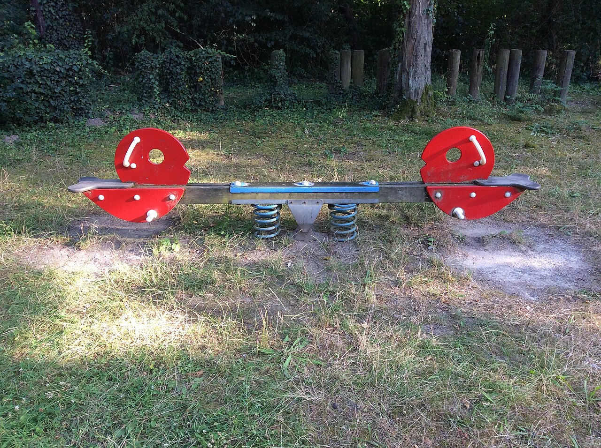
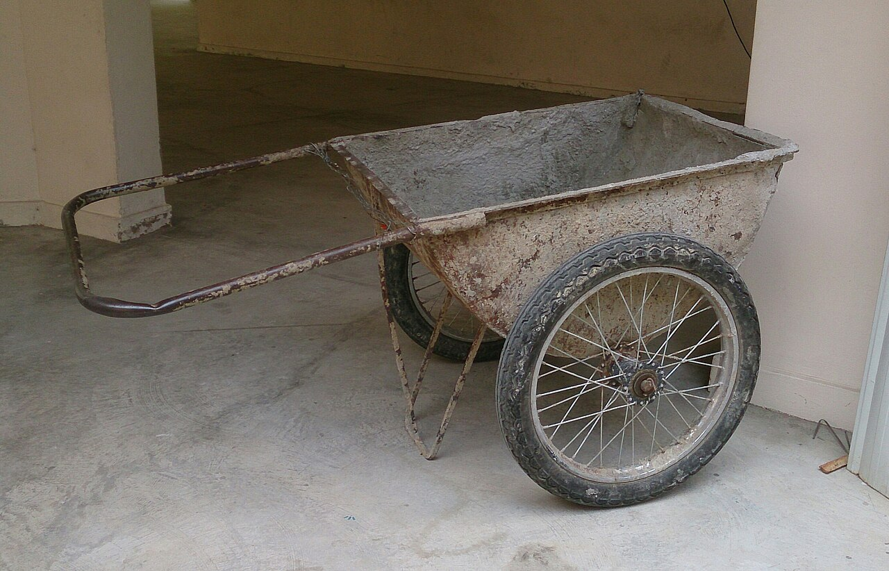
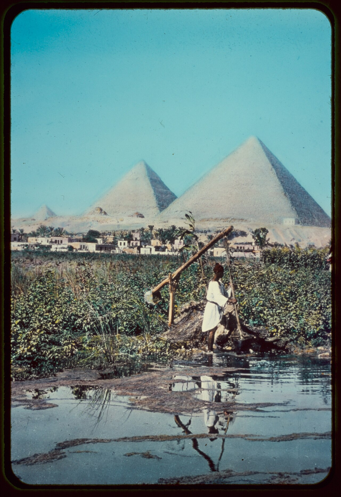
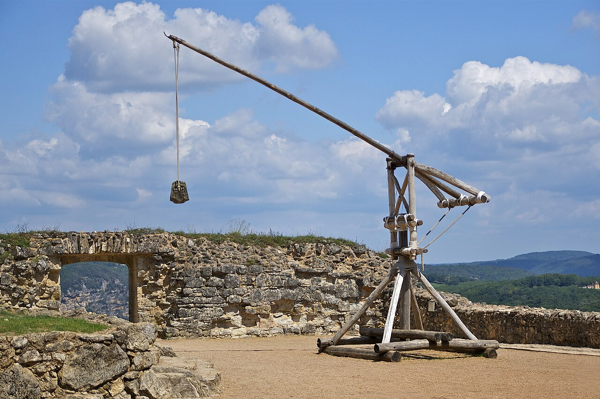

E — F — L
Fulcrum in the middle. Seesaw, scissors, claw hammer.
Physics · Engineering · Hands-on STEAM
Move heavy loads, trade force for distance, and discover how a catapult turns stored energy into motion. Change the variables on screen, then build and test your own classroom-safe design.
The big idea
Your push or pull is the effort. The object you want to move is the load. Distance from each force to the fulcrum controls the turning effect, called torque.
A longer effort arm lets a smaller force balance a larger load. The trade-off is distance: your end moves farther while the load moves less. No free energy—just a useful exchange.

Fulcrum in the middle. Seesaw, scissors, claw hammer.

Load in the middle. Wheelbarrow, bottle opener.
Effort in the middle. Forearm, broom, fishing rod.
The letter in the middle names the class: F in the middle is Class 1, L is Class 2, and E is Class 3.
Make · test · improve
Use soft projectiles only. Each recipe is a starting point, not a final answer—measure it, change one feature, and test again.
Safety first
Engineering cycle
| Trial | Variable | Distance | Notes |
|---|---|---|---|
| 1 | ________ | ____ cm | ________ |
| 2 | ________ | ____ cm | ________ |
| 3 | ________ | ____ cm | ________ |
Science: Where does the energy go? Technology: Film in slow motion and estimate release angle. Engineering: Reduce wobble without adding much mass. Art: Design a readable scale and team identity. Math: Find mean range, variation, and graph one input against distance.
Observe · identify · explain
Read each image like an engineer. Find the pivot, locate the load, and trace where a person or stored energy applies effort.


From the latest lesson · 7,000 years of leverage
The lever may be humanity's oldest machine. A branch beneath a stone already contains the complete idea: a rigid arm turns around a pivot, trading motion for force.
By roughly 3000 BCE, Egyptian and Mesopotamian farmers were using the shaduf, a counterweighted Class 1 lever, to raise water into irrigation channels. Around 250 BCE, Archimedes gave this practical knowledge a mathematical foundation with the law of the lever.
A piano key, claw hammer, surgical forceps, seesaw, and trebuchet look unrelated, but all obey the same torque balance.
A counterweight reduces the effort needed to lift water.
The relationship between force and distance is expressed mathematically.
A counterweight and long arm convert gravitational energy into projectile motion.
Presses, switches, brakes, keys, robotics, and tools combine levers into systems.
Follow the trebuchet into the Siege Engines launch lab to compare gravity with stretched and twisted springs, then test how arm ratio and release angle change a soft projectile's flight.
Modern applications · body and machine
The latest version of this lesson connected the ancient principle to everyday engineering. Use these examples to identify the class, then explain whether the design favors force, speed, or range of motion.